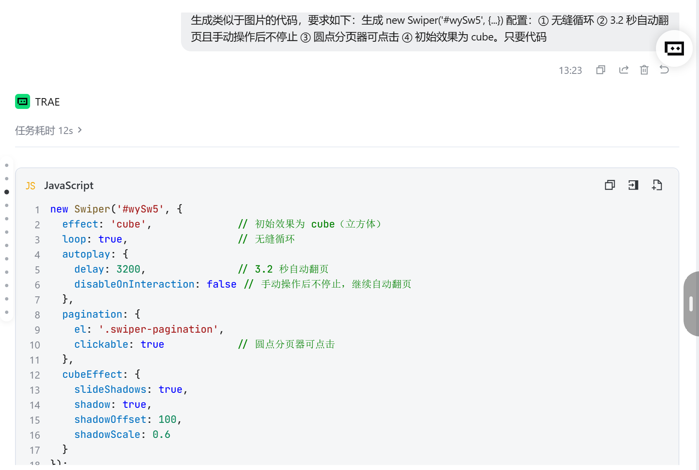
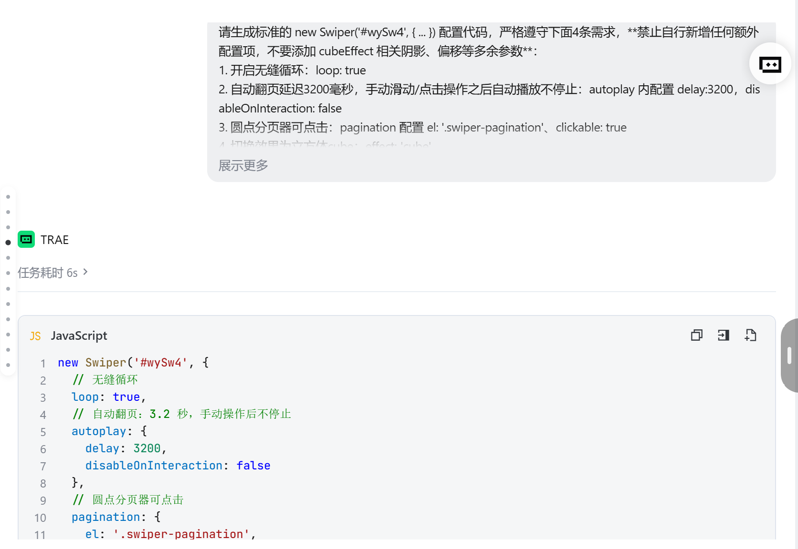
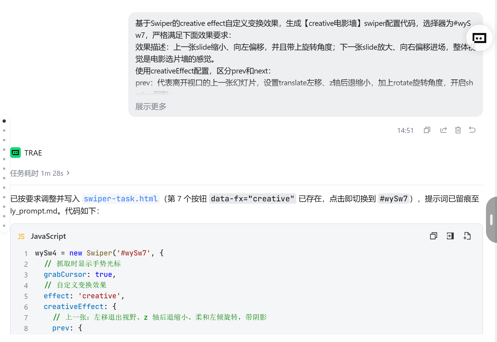
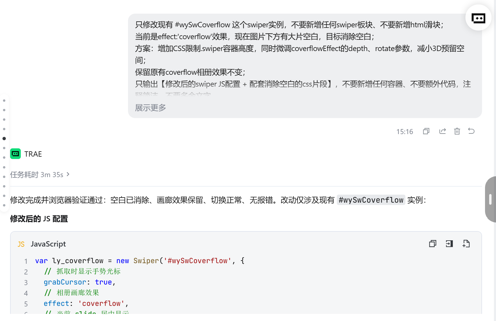
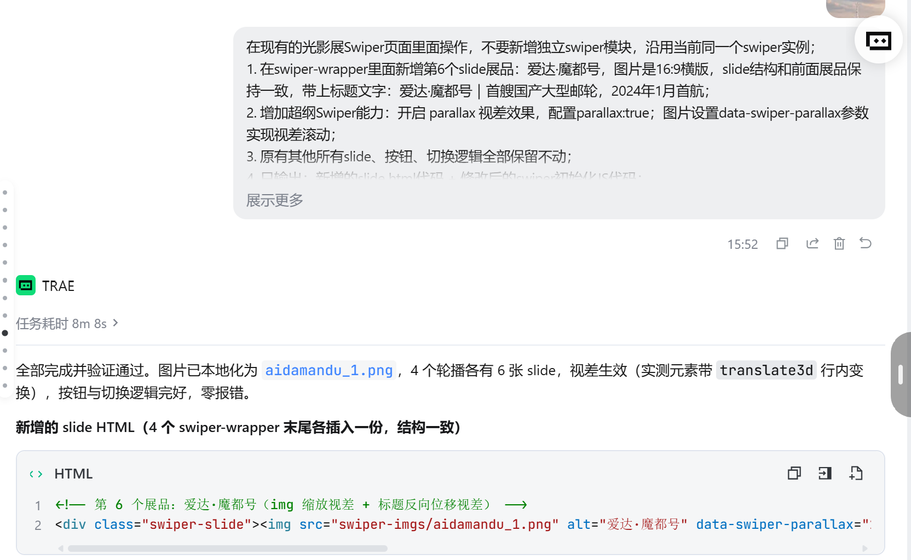

Swiper 轮播组件 · 大国重器光影展（学生版）
HTML 骨架和 CSS 样式已经全部搭好，图片也备齐了——但这个页面的轮播一个都不会动！ 因为所有 <script> 里的 JS 初始化代码都被抽走了。你的任务：把 4 个轮播全部"救活"。
① Swiper 组件库已通过 CDN 引入（页面第 8、9 行），不需要再写引入代码；
② 每个"演示台"下面的绿色卡片就是该任务的要求，JS 代码统一写在页面最底部的
<script> 区域内；③ 每完成一个任务就刷新页面验证：能拖、能点、会自己翻，才算通过；
④ 控制台（F12）报错是你要最好的朋友——先读报错，再改代码。
救活最小轮播三行 JS · 让照片可以拖动
下面是"最小轮播"骨架：三层结构齐全，但因为没有初始化，照片僵在第一张。请写出初始化代码，让它至少可以按住拖动。
✍️ 任务 1 要求
在页面底部 <script> 中初始化 #wySw1，让它成为可拖动的轮播（最基础写法，一个空配置对象即可）。

天宫空间站
2022 年全面建成 · 中国人的太空家园

复兴号动车组
350 km/h · 世界商业运营最高时速

C919 大飞机
2023 年商业首航 · 国产干线客机翱翔蓝天

中国天眼 FAST
500 米口径 · 世界最大单口径射电望远镜
装上遥控器pagination 圆点 + navigation 箭头
HTML 里已经埋好了三个"遥控器"元素：#wyPag2（圆点）、#wyPrev2 / #wyNext2（左右箭头）。请通过配置让它们"通电"。
✍️ 任务 2 要求
初始化 #wySw2，实现 4 个效果：① 无缝循环（loop）② 切换动画时长 600 毫秒（speed）③ 圆点分页器且可点击跳转（pagination，别漏 el）④ 两侧箭头可切换（navigation）。
天宫空间站
三舱结构 · 神舟乘组常年值守
复兴号动车组
京张高铁智能驾驶 · 百年京张到智能京张
C919 大飞机
让中国人的大飞机梦照进现实
中国天眼 FAST
南仁东先生 22 年铸就的观天巨目
让它自己翻页autoplay 自动播放 + loop 无缝续播
网页 Banner 最常见的形态：自己会翻页。autoplay.delay 控制每张停留的毫秒数，disableOnInteraction: false 表示用户手动滑动之后自动播放不停止。
✍️ 任务 3 要求
初始化 #wySw3，实现：① 循环播放 ② 每 2.6 秒自动翻页 ③ 用户拖动之后自动播放继续 ④ 保留底部圆点分页器（#wyPag3）。
天宫空间站
巡天遥看一千河
复兴号动车组
中国速度 · 风驰电掣
C919 大飞机
蓝天之上 · 大国担当
中国天眼 FAST
仰望星空 · 脚踏实地
六种效果随心换effect 参数 + 进阶：按钮实时切换
改一个 effect 参数，轮播立刻换一种"性格"：slide / fade / cube / coverflow / flip / cards。上面的 6 个按钮已经绑好了点击事件（读取 btn.dataset.fx），JS 还需要你补两段。
✍️ 任务 4 要求
基础分：初始化 #wySw4，实现循环 + 自动播放（3.2 秒）+ 圆点分页器（#wyPag4），初始效果为 'slide'，动画时长 800 毫秒。
进阶分：补全按钮点击事件中的 TODO——实现点击按钮切换效果。提示：Swiper 动态换 effect 不能只改参数，需要先销毁旧实例再重建（destroy + new）。
⭐ 验证标准：基础分——轮播自动翻页；进阶分——点 cube 按钮变 3D 立方体、点 fade 变淡入淡出天宫空间站
试试上面的效果按钮
复兴号动车组
同一组照片，六种讲述方式
C919 大飞机
企业官网爱用 fade
中国天眼 FAST
相册页面爱用 coverflow
我的作答区任务一 / 二 / 三 · 与 AI 的对话记录 + 验证截图 + 答辩自答
三张作答卡对应答辩任务：保留每轮提示词与 AI 回答，亲自验证后用截图 + 一句话结论说明结果，答辩抽问的自答附在卡片底部。截图粘贴到虚线框内即可。
目标：让 AI 生成 new Swiper('#wySw4', {...})——①无缝循环 ②3.2 秒自动翻页且手动操作后不停止 ③圆点分页器可点击 ④初始效果为 cube。
生成类似图片的 new Swiper 配置（当时选择器写的 #wySw5），只要代码：① 无缝循环 ② 3.2 秒自动翻页且手动操作后不停止 ③ 圆点分页器可点击 ④ 初始效果为 cube。
四项需求都给了配置，但夹带了需求外的额外参数——多写了 cubeEffect: { slideShadows, shadow, shadowOffset: 100, shadowScale: 0.6 } 阴影偏移配置，违反"只要代码、不加额外配置"的预期。

✅ 一句话结论：第 1 轮代码能跑，但多了需求外的 cubeEffect 参数——直接采用会被扣"未按需求"的分，引出第 2 轮收敛。
请生成标准的 new Swiper('#wySw4', { ... }) 配置代码，严格遵守 4 条需求，禁止自行新增任何额外配置项，不要添加 cubeEffect 相关阴影、偏移等多余参数；选择器固定为 #wySw4 不能改；只输出完整可运行的 Swiper 代码，注释简洁、不要额外解释。
loop: true ＋ autoplay: { delay: 3200, disableOnInteraction: false } ＋ pagination: { el: '#wySw4 .swiper-pagination', clickable: true } ＋ effect: 'cube'，无任何冗余项。

✅ 一句话结论：页面实测——cube 立方体切换正常、每 3.2 秒自动翻页、手动拖动后继续自动播放、点圆点可跳转，与 4 项需求完全一致。
目标：对照官方示例 257-effect-creative.html，为演示四新增第 7 个按钮「creative 电影墙」——上一张缩小左移带角度、下一张放大右移进场，要"像电影选片墙"。
基于 creative effect 生成【creative 电影墙】配置，选择器 #wySw7：prev（滑走上一张）translate 左移、z 轴后退缩小、加 rotate 旋转、开 shadow 阴影；next（进场下一张）translate 右移、z 轴放大靠前、配合旋转、开 shadow 阴影；基础配置仅 grabCursor: true 和 effect: 'creative'，旋转柔和、不要照搬示例里的极端翻转。
给出 creativeEffect 双向配置，但 rotate 写成了数组 [-8,0,0]、[6,0,0]——Swiper 的 creativeEffect.rotate 只接受绕 Z 轴旋转的单个数字，数组被整体忽略，页面上只有位移缩放、看不到旋转。

✅ 一句话结论：第 1 轮页面里卡片只平移缩放、不旋转——rotate 数组写法无效，这是"照搬 CSS rotate3d 习惯"踩的坑。
生成标准的 new Swiper('#wySw7', {...})，prev、next 都必须配置 rotate 旋转和 shadow 阴影，禁止新增 loop、autoplay 等无关参数；要求电影选片墙错落感、旋转柔和；后续页面出现多余白底，再要求加大位移让相邻卡片完全退出裁切线。
prev: translate ['-160%','-4%',-180] + rotate -8（单数字）+ scale 0.85 + shadow；next: translate ['160%','4%',60] + rotate 6 + scale 1.06 + shadow——rotate 改单数字后旋转生效；位移从 ±110% 加到 ±160%，配合容器裁切，白底消失、静止时只显示当前一张。

✅ 一句话结论：修正 rotate 写法并加大位移后，上一张缩小左转退场、下一张放大右转进场，电影墙效果成立且无白底。
目标：①新增第 6 件展品「爱达·魔都号」（首艘国产大型邮轮，2024 年 1 月首航，AI 生成 16:9 横图）②挑一个课堂没讲过的 Swiper 能力加上去——我选 parallax 视差。
在现有光影展 Swiper 页面里操作，不新增独立模块，沿用同一个 swiper 实例：①swiper-wrapper 里新增第 6 个 slide 爱达·魔都号，16:9 横版，结构与前面展品一致，标题"爱达·魔都号｜首艘国产大型邮轮，2024 年 1 月首航"；②开启 parallax 视差，图片设置 data-swiper-parallax 参数；③原有 slide、按钮、切换逻辑全部保留。
第 6 个 slide 的 img 用 data-swiper-parallax="12%" + data-swiper-parallax-scale="1.25"，标题用 data-swiper-parallax="-150" 反向位移，6 处初始化配置都加 parallax: true。第一次给的是固定 300px 位移——100% 宽的图片会被推离滑块露出白底，追问后改为 12% 百分比并叠加 scale 1.25 让图片溢出补边，视差时不露白。
